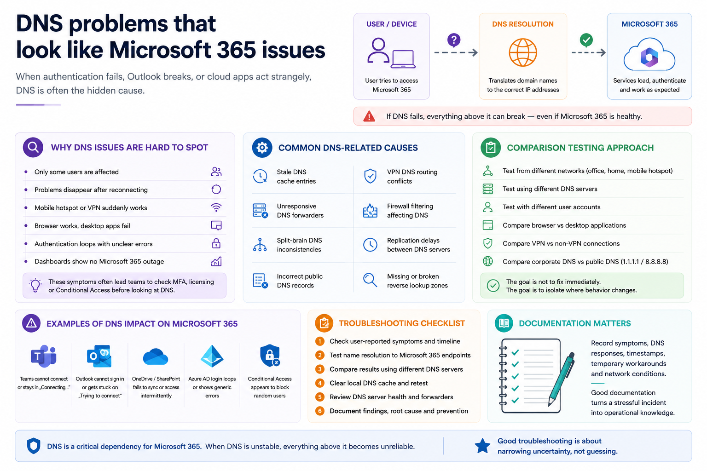

When cloud services fail but nothing looks broken
One of the most frustrating scenarios in IT support is when users report Microsoft 365 problems but monitoring platforms show no outage, authentication systems appear healthy and network connectivity looks normal.
Teams disconnects. Outlook cannot authenticate. SharePoint behaves inconsistently. Some users work normally while others cannot access services at all.
In many of those situations, DNS becomes the hidden layer behind the incident.
Important: cloud authentication depends heavily on correct DNS resolution, reliable forwarders, healthy caching behaviour and consistent network paths.
Why DNS issues are difficult to identify
DNS failures are rarely complete outages.
More commonly, they create partial failures:
- only some users are affected
- problems disappear temporarily after reconnecting
- mobile hotspots suddenly work
- VPN users experience different behaviour
- browser access works while desktop applications fail
- authentication prompts loop without clear errors
Those symptoms often lead teams toward MFA, licensing, Conditional Access or endpoint troubleshooting before checking the network resolution layer.
Common DNS-related causes behind Microsoft 365 incidents
- stale DNS cache entries
- unresponsive DNS forwarders
- split-brain DNS inconsistencies
- incorrect public DNS records
- VPN DNS routing conflicts
- firewall filtering affecting DNS traffic
- replication delays between DNS servers
- missing or broken reverse lookup zones
Related project: DNS Audit Tool
I also built a small DNS Audit Tool to help identify issues such as stale records, missing PTR records, forward/reverse mismatches and other inconsistencies that can create confusing operational symptoms.
View the project on GitHub: DNS Audit Tool
Start with comparison testing
A practical troubleshooting approach is to compare behaviour across:
- different networks
- different DNS servers
- different user accounts
- browser versus desktop applications
- VPN versus non-VPN connections
- corporate DNS versus public DNS
The goal is not to immediately fix the issue. The goal is to isolate where the behaviour changes.
Why documentation matters during DNS incidents
DNS-related incidents often become recurring operational problems because teams only document the final fix and not the investigation path.
Recording symptoms, affected services, DNS responses, timestamps, temporary workarounds and network conditions helps future troubleshooting become faster and more repeatable.
Operational troubleshooting is about narrowing uncertainty
Good troubleshooting is rarely about guessing the answer immediately.
In real environments, especially in hybrid Microsoft 365 infrastructures, support work becomes a process of reducing uncertainty layer by layer: identity, endpoint, policy, connectivity and DNS.
Need help troubleshooting recurring Microsoft 365 or DNS-related issues?
I help teams and small businesses diagnose Microsoft 365, access, endpoint and operational support problems remotely across EU and UK time zones.
Contact: rafael@rafaelalba.com